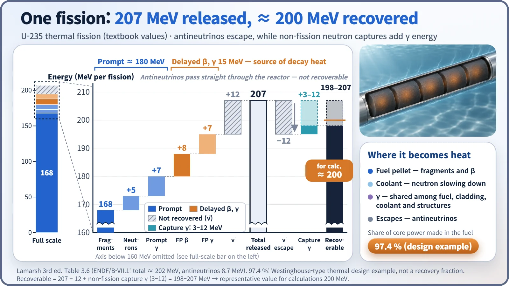
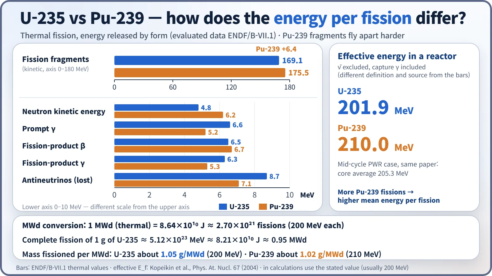
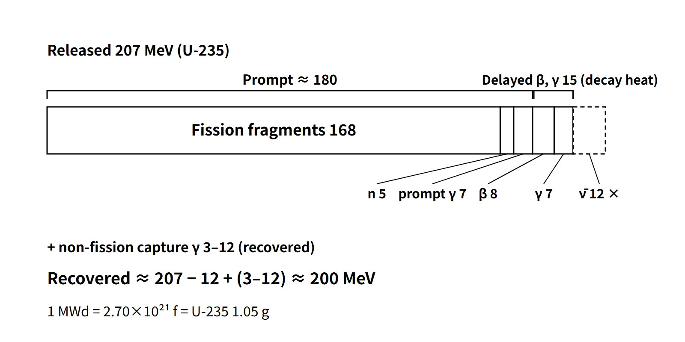

Reactor Physics & Kinetics · C-RX-021
Fission Energy and Recoverable Energy — Why 207 MeV Is Released but About 200 MeV Becomes Heat
Fragments 168, prompt 180, delayed 15, antineutrinos −12 and capture γ +3–12: the bookkeeping behind the 200 MeV per fission used in every power calculation.
One fission of U-235 releases about 207 MeV. Subtracting the antineutrino share that escapes the reactor (about 12 MeV) and adding the capture γ from leftover neutrons (3–12 MeV) gives about 200 MeV that actually turns into heat inside the reactor; this is the recoverable energy.
Principle and mechanism
Where the energy comes from: the difference in binding energy
The binding energy per nucleon of U-235 is about 7.6 MeV, while fission fragments with mass numbers around 90–140 have about 8.5 MeV. Multiplying the difference of about 0.9 MeV by about 236 nucleons gives an energy of the order of 210 MeV. In mass terms, 200 MeV ÷ 931.5 MeV/u ≈ 0.215 u, so about 0.09 % of the original mass is converted into energy.
Breakdown by form of release
| Form | Energy (MeV) | Timing | Recovered | Mainly absorbed in |
|---|---|---|---|---|
| Kinetic energy of fission fragments | 168 | Prompt | Yes | Inside the pellet (range about 10 μm) |
| Kinetic energy of fission neutrons | 5 | Prompt | Yes | Moderator and coolant (slowing-down collisions) |
| Prompt γ | 7 | Prompt | Yes | Fuel, cladding, coolant, structures |
| Fission-product β | 8 | Delayed | Yes | Mostly fuel |
| Fission-product γ | 7 | Delayed | Yes | Fuel, structures, shielding |
| Antineutrinos | 12 | Delayed | No | Escape from the reactor |
| Non-fission capture γ | 3–12 | Mostly prompt | Yes | At the capture site (mostly fuel) |
| Total | Released 207 / recovered 198–207 | About 200 MeV |
Based on Lamarsh 3rd ed., Table 3.6. The evaluated data of ENDF/B-VII.1 differ slightly: fragments 169.1, neutrons 4.8, prompt γ 6.6, β 6.5, delayed γ 6.3 and antineutrinos 8.7 MeV. These sum to about 202 MeV released, with the largest difference in the antineutrino share (12 versus 8.7). Because figures differ by source, quote them as approximate and use 200 MeV as the recoverable total.

The breakdown can be organized along three axes.
- Recovered or not: antineutrinos hardly interact with matter and pass through every structure. Meanwhile, of the ν ≈ 2.43 neutrons per fission, the roughly 1.4 left after the one that sustains the chain are (apart from those that leak) mostly captured in non-fission reactions and emit capture γ. This extra energy partly offsets the neutrino loss, so the recoverable energy is 198–207 MeV, with about 200 MeV as the representative value for calculations. The capture-γ energy varies from 3 to 12 MeV with the core materials (U-238, boron, water, zirconium).
- Timing: the prompt share of 168 + 5 + 7 = 180 MeV (about 90 % of 200 MeV) appears at the instant of fission, and the delayed β 8 + γ 7 = 15 MeV (about 7.5 %) appears as the fission products decay (the 12 MeV of antineutrinos is also emitted with a delay but is not recovered). This delayed β and γ share is the origin of decay heat; the actual decay heat right after shutdown is about 6–7 %, depending on the operating history.
- Location: fission fragments stop within a few μm inside the pellet, so all of their energy becomes heat in the fuel, and β is also mostly absorbed in the fuel. Neutron kinetic energy is transferred to the coolant mainly through slowing-down collisions with water, and γ rays, with mean free paths of a few cm, are absorbed partly in the fuel, cladding, coolant, pressure vessel and shielding.
Converting to 1 g and 1 MWd
- 200 MeV = 3.204×10⁻¹¹ J → 1 W = 3.12×10¹⁰ fissions/s
- 1 MWd = 8.64×10¹⁰ J = 2.70×10²¹ fissions = 1.05 g of U-235 fissioned (this is the mass fissioned, not the total U-235 consumed, which also includes capture)
- 1 g of U-235 = 2.562×10²¹ atoms → 5.12×10²³ MeV = 8.21×10¹⁰ J ≈ 0.95 MWd
- Example (APR1400 core thermal power 3,983 MWt): 1.24×10²⁰ fissions/s, about 4.2 kg of U-235 equivalent fissioned per day
- Worked example (3,000 MWt, 200 MeV per fission): 8.09×10²⁴ fissions per day, or about 3.16 kg of U-235 fissioned per day
- Worked example (theoretical maximum from 1 g of natural uranium): if every U nucleus fissions (U-238 by fast fission or after conversion to Pu), 2.530×10²¹ × 200 MeV × 1.6×10⁻¹³ J/MeV = 8.10×10¹⁰ J; if only the U-235 (0.711 wt%) fissions, 5.83×10⁸ J
Why Pu-239 gives more
As burnup proceeds, Pu-239 takes over part of the power. Pu-239 has a higher atomic number, so the Coulomb repulsion between its fragments is stronger and the fragment kinetic energy is about 175.5 MeV, about 6 MeV more than for U-235. The effective in-reactor values (including capture γ) are about 202 MeV for U-235 and about 210 MeV for Pu-239, and the core average of a PWR at mid-cycle is about 205 MeV (Kopeikin et al. 2004). Conversely, the delayed γ and antineutrino shares are smaller for Pu-239 (β is similar, 6.7 versus 6.5 MeV), and its delayed-neutron fraction is also small, 0.0021. The difference between the two effective values comes not only from the fragment share but also from differences in the neutron and capture-γ shares. The mass of Pu-239 fissioned per MWd is about 1.02 g.

What it means in a plant
- Power measurement: ex-core neutron instruments see the fission rate, while thermal power is determined by the secondary-side heat balance (calorimetric). As burnup increases the Pu share, the energy per fission changes from about 202 to 205–207 MeV and the flux distribution also shifts, so ex-core instruments are periodically recalibrated against the heat-balance value.
- Thermal-hydraulic design: the fraction of core thermal power generated inside the fuel is 97.4 % in a design example (Westinghouse type; a different concept from the recovery fraction), and this is the γ = 0.974 used in heat-flux calculations. The remaining 2.6 % or so is generated directly in the coolant and structures, similar in size to the neutron slowing-down share (5/200 = 2.5 %).
- Safety analysis: the delayed β and γ share remains after shutdown and sets the basis for decay-heat removal systems and ECCS design.
- Structural design: γ heating is an input to the thermal-stress and cooling design of the pressure vessel, reactor internals and biological-shield concrete.
- Monitoring applications: antineutrinos are not recovered, but there is research on monitoring reactor power and Pu content by detecting them outside the core (a safeguards research field).
Regulatory and design criteria
The following US references are examples of where the recoverable energy and its delayed share enter licensing analyses.
| Basis | Key point |
|---|---|
| NUREG-1431 (STS) Section 1.1 definitions | Rated thermal power (RTP) = total core heat transfer rate to the reactor coolant. |
| 10 CFR 50 Appendix K, I.A | Initial power for ECCS evaluation at least 102 % of licensed power (instrument uncertainty; relaxed by the 2000 amendment when the uncertainty is demonstrated); decay heat = ANS 1971 proposed standard × 1.2 |
| ANSI/ANS-5.1-2014 | Decay-heat standard by nuclide (U-235, U-238, Pu-239, Pu-241), using the recoverable energy per fission as an input |
Evaluated data have been updated to ENDF/B-VII.1 (2011) and VIII.0 (2018), but the 200 MeV convention for preliminary calculations remains.
Easily confused pairs
| Total energy released | Recoverable energy | Prompt energy | Delayed energy | |
|---|---|---|---|---|
| Value (U-235) | About 207 MeV | About 200 MeV | About 180 MeV | About 15 MeV (+ neutrinos) |
| Includes | Antineutrinos included, capture γ excluded | Antineutrinos excluded, capture γ included | Fragments, neutrons, prompt γ | Fission-product β and γ |
| Use | Checking against the mass defect | Converting thermal power ↔ fission rate | Power response | Decay heat |
| Common mistake | Using it for thermal-power conversion | Leaving out capture γ | Taking it as the whole 200 MeV | Counting neutrinos as heat |
Another pair is fission energy versus mc². The mass energy of an entire gram is 9.0×10¹³ J, but fission yields only the mass defect of about 0.09 %, 8.2×10¹⁰ J.
Key points at a glance
- Definition: recoverable energy = fission energy converted into heat inside the reactor ≈ 200 MeV per fission (U-235).
- Origin: difference in binding energy (7.6 → 8.5 MeV per nucleon); mass defect about 0.215 u.
- Prompt: fragments 168, neutrons 5, prompt γ 7 → 180 MeV (about 90 %).
- Delayed: fission-product β 8, γ 7 → 15 MeV (about 7.5 %) = origin of decay heat.
- Not recovered: antineutrinos about 12 MeV → escape.
- Compensation: non-fission capture γ 3–12 MeV recovered → 207 − 12 + (3–12) ≈ 200.
- Location: about 97 % of core thermal power is generated in the fuel (design example 97.4 %); part of the neutron slowing-down and γ energy goes to coolant and structures.
- Conversion: 1 MWd = 2.70×10²¹ fissions = 1.05 g of U-235; 1 g = 5.12×10²³ MeV.
- Pu-239: effective about 210 MeV (U-235 about 202 MeV), larger fragment energy.
